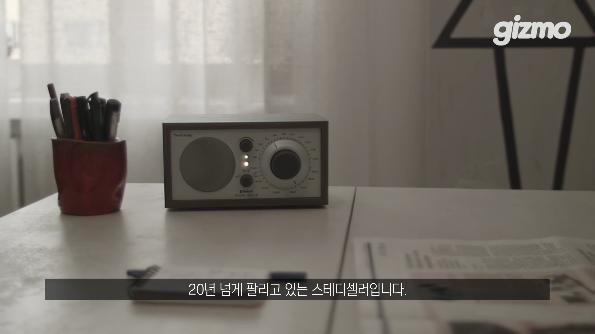
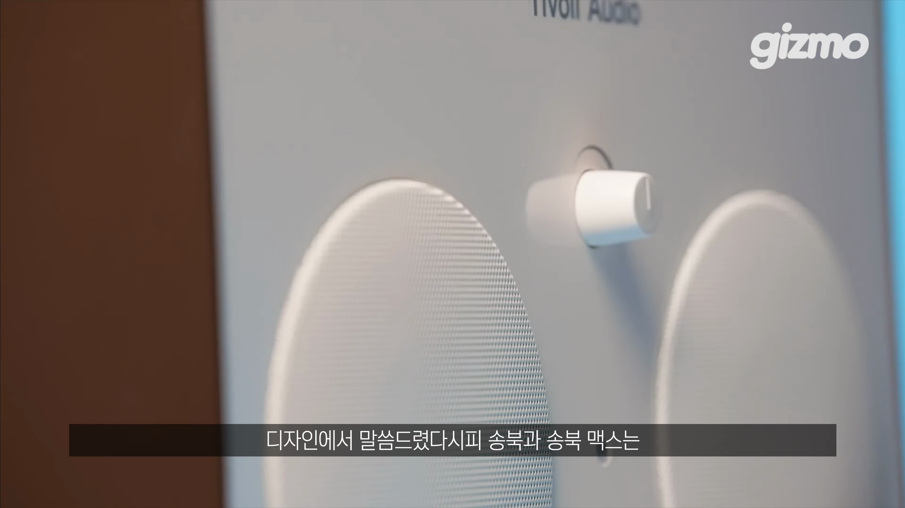
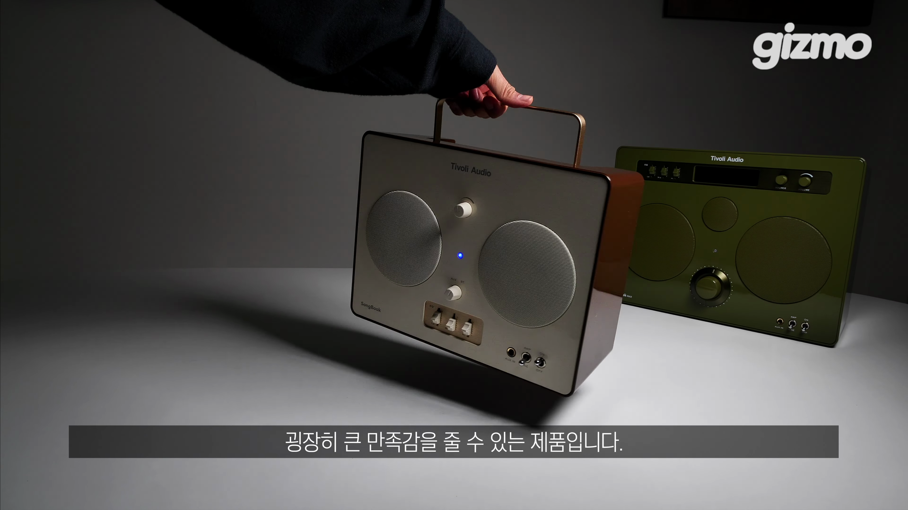

이번 포스트에서는 25년 전통을 자랑하는 티볼리 오디오의 두 제품, 송북과 송북 맥스를 깊이 있게 분석합니다. 이 두 스피커 디자인과 음질, 기능 등 모든 요소를 살펴보며 레트로와 현대가 조화를 이루는 모습을 발견해 보세요.

티볼리 오디오 소개
- 티볼리 오디오는 2000년 헨리 크로스에 의해 설립된 전설적인 스피커 회사이다.
- 이 회사의 초기 모델인 FM 라디오가 특히 유명하다.
- 그들의 스피커는 밀폐형 디자인과 소형화에 기여한 업적이 있다.
티볼리 오디오는 전설적 스피커 엔지니어 헨리 크로스에 의해 설립되어, 소형 밀폐형 스피커 디자인에서 뛰어난 업적을 쌓았습니다.

송북과 송북 맥스: 디자인 및 기능
- 송북은 휴대성을 고려해 손잡이가 있는 디자인이다.
- 송북 맥스는 대형화된 모델로서 더 풍부한 사운드를 제공한다.
- 두 제품 모두 배터리 탑재와 함께 생활 방수 지원 기능을 갖춘다.
송북과 송북 맥스는 레트로한 디자인과 현대적인 기능을 결합하여 다재다능한 사용성을 제공합니다.

올드팝과 재즈에 최적화된 음질
- 송북과 송북 맥스 모두 모노 유닛 구조로 중음역대가 강조된 음악을 제공한다.
- 특히 보컬과 현장감이 뛰어나 올드팝 및 재즈 장르에 적합하다.
- 라디오 기능이 내장되어 있어 감성적인 음악 감상이 가능하다.
이 두 스피커는 보컬 위주의 음악 감상에 최적화되어 있으며, 생생한 현장감을 전달합니다.

아쉬운 점 및 체험 서비스 소개
- 모노 설계로 인해 스테레오감은 떨어질 수 있다.
- 앱 기능이 지원되지 않으며, 블루투스 스피커로서 일부 제한이 있다.
- 직접 체험할 수 있는 서비스가 제공된다.
티볼리의 송북 시리즈는 모노 설계로 인한 한계를 가지지만, 특별한 체험 서비스가 제공되어 누구든지 직접 음악 감상을 할 수 있습니다.
Tags: #티볼리 오디오 #송북 #송북 맥스 #레트로 스피커 #모노 음질 #FM 라디오 #재즈 음악 #올드팝 #휴대용 오디오 #블루투스 스피커